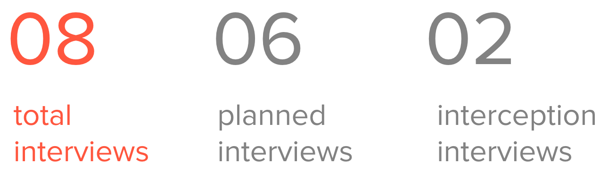
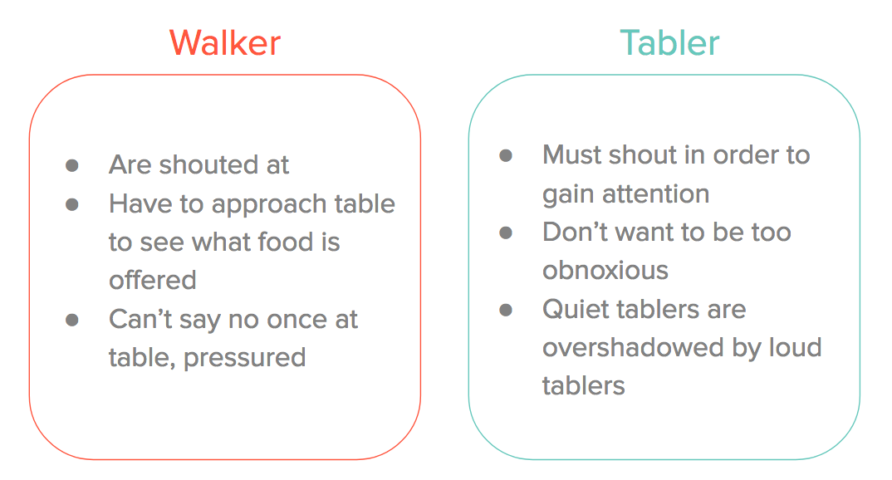

Challenge
How can we improve food experience on-campus for students at The University of Texas at Austin?
Outcome
feed, a mobile app that connects students to food being sold on campus. Our solution is a platform for student organizations to post what food they are selling, so students can easily find unique food to try while also increasing traffic to student organizations selling food.
Background
The food scene on the University of Texas at Austin campus is very diverse. There are over 30 cafes and fast food places, as well as dynamic food options such as food trucks that swap out daily (sometimes twice a day!), student organizations that sell food, and special events that provide food.
However, the information on all the food options on campus is scattered everywhere, and students have to go to many different locations to find information about where to eat. Also, due to the changing nature of available food options, information was not easily accessible through popular food apps, like Yelp.
Initial Assumptions
During our brainstorming time, we came up with a lot of different problems we experienced and assumed other people experience with food on campus.
Our hypothesis include many problem such as finding healthy options, dietary restrictions, proximity, price, reviews, times, busyness, eating with friends, etc. We conducted interviews to find out what really mattered to UT students when buying food on campus.
Research
We interviewed a diverse group of students: freshman through seniors, living on-campus and off-campus, different genders, majors and food habits (if known), etc.
Six interviews were scheduled with roommates, friends, and peers. Two interviews were interception interviews, where we went to the Student Activity Center (SAC) on campus (a very busy lunch spot) and interviewed students there.
Insights
1) Students value proximity over other factors when deciding where to eat.
Students value their time, especially amongst their busy schedules. Students will choose to spend more money on a meal that is closer because it is more convenient. They do not prioritize healthiness or price like we originally hypothesized.
2) Students want to try new things, but they stick to what they know.
Students like variety and trying new foods, but based on their behavior, they usually stick to what they know. This behavior is mostly based on not having time or money to risk eating at a new place and not liking the food. However, students who tried new food experiences tend to enjoy it. One interviewee said his most memorable food experience was at a special food event during the Lunar New Year Festival on campus.
3) Students don't want to download an app unless they find it to be uniquely useful to them.
Students have a lot of apps on their phone and they don't like downloading a new app unless they find it uniquely useful to them. This observation was an important discovery when coming up with our solution. We knew we couldn't just have an informational app with static information, but we had to create a solution that was uniquely useful to students.
Design Requirements
Based on our observations and insights form our interviews, we came up with three design requirements to make sure our solution helped solve the problems we discovered from our users.

Target Users
There were 4 major user groups we could target that would greatly improve the food experience on campus: food trucks, student organizations, special events (ex: Lunar New Year Festival), and companies. Based on the scope of this project, we decided to target student organizations - this group was the most prevalent on campus and we decided it had the most potential for improvement.
Student organizations often participate in "tabling," where students organizations sell food on campus in order to raise money for their organization or for a cause. They set up literal tables and decorate and yell to attract attention from students walking to class.
To give more context of what this experience is like, we took a video down "Speedway," the main road that runs through campus where you can commonly find student organizations "tabling."
Video of "tablers" yelling to attract attention of the student walking to class
To focus our target group, we broke the target users into 2 groups: "tablers" and "walkers." Tablers are the students in the organizations trying to sell food to people passing by. Walkers are the students passing by the student organization tables on their way to class.
Pain Points
With our additional field research, we were able to identify the major pain points of each user group.
Personas
Through our research, we were able to create 3 different types of personas that would interact with the student organizations tabling.

Solution
To bridge the gap between the tablers and the walkers, we wanted to create a digital solution that allowed tablers to easily communicate to the walkers what they are selling.
Our solution will also inform walkers what is going to be sold, to increase interaction between walkers and tablers. We decided on a mobile application because of the accessibility to both tablers and walkers while they are around campus.
Wireframing
Final Outcome
Final Thoughts
I believe we did a great job doing thorough research and scoping down our problem throughout this project. One thing I wish we could have done was test our 'final' prototype. Unfortunately, based on the timeframe of the semester, we didn't get to thoroughly test and iterate through multiple prototypes, therefore we don't know how our users will actually interact with our product. Another thing I wished we had done was interview more student organizations ("tablers"), because that would have helped create a more useful interface for the students on that side of the application.